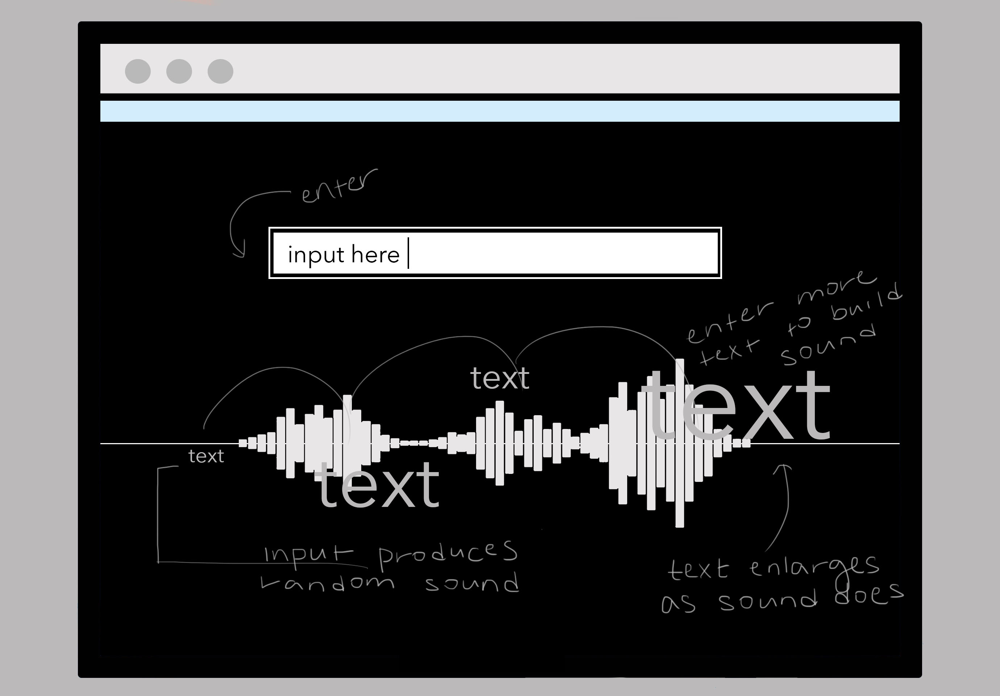

HOME
#1 My Website Is A Shifting House.. By Laurel Schwulst
Imagining the website as anything. Website as bookshelf is an interactive space that acts as an archive of work where a "book" is a process book that can be flipped through.

Imagining the website as anything. Website as bookshelf is an interactive space that acts as an archive of work where a "book" is a process book that can be flipped through.
Exploration of binary code as a language and use in password. Owner assigns a password based on assigning letters to a number in binary code. Hence, makes it harder for users to manually access and effective in privacy.
Encouraging motivation in response to the effects of multi-tasking: increased production of stress hormone, over-stimulation the brain and cause scrambled thinking, and creating a loop of reward and distraction.

A photo gallery that incorporates Hockney's overlapping photos to display photos in clusters based on memory. The website is an infinite timeline as the more memories you accumulate over time, the more photos associated appear.
Reconsidering daily action of texting as ways of communicating without sound to generate a random sound based on input text. The generated sound may misread the input and produce an odd sound which represents the misunderstanding texting often causes.
Expanding on the idea of the Space For Soul and meditation apps. User solves a small puzzle to create an image and can find satisfaction in completing the puzzle.